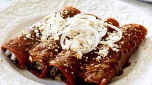

Enchiladas de Mole

Description
Enchiladas de Mole is an iconic mexican dish that includes shredded chicken and cheese inside corn tortillas. They are then smothered with mole sauce and baked.
Ingredients
- Chicken: Rotisserie Chicken, or substitute with carnitas or carne asada
- Cheese: mozzarella, or your favorite kind
- Tortillas: white or yellow corn tortillas
- Toppings: Sour cream, avocado, cotija or queso fresco,cilantro, sliced radishes
Steps
- Preheat oven to 350 degrees F. Warm corn tortillas on a hot skillet for a few seconds each side, or fry them lightly in oil
- Pour 1/4 cup of mole sauce into the bottom of a 9 by 13 pan. Fill each corn tortilla with a handful of chicken and small sprinkle of cheese, then roll tightly, and place seam side down into the pan
- Pour remaining mole sauce over the top. Bake for 20-25 minutes or until hot and bubbly
- Remove from oven and top a drizzle of sour cream, a sprinkle of cotija cheese, cilantro and chopped avocado